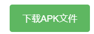
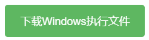

什么是Spark？
Spark是一款初（网名）编写的模拟操作系统（虽然不是真正的操作系统，但是也颇具几分姿色）Spark系统主要由安装界面和主要图形操作界面为主。Spark第一代并不叫作Spark 1.0.0.0，而是被称作dictionary 1.0，开发者也许是希望他能查阅到很多信息吧……不过可惜的是dictionary 1.0系统的源代码已经找不到了……
为什么要编写Spark？
Spark的灵感主要是开发者在编程社区中闲逛时，看到了一个名为Windows 10操作系统的模拟编程作品，于是便有了开发一款操作系统的想法。 Spark操作系统最早编写于2021年，每一代操作系统都随着上一代的迭代而更新，操作也变得更加流畅和稳定。随着越来越多的Java插件的发现和云存储的发现，在Spark 4发布结束后，首次出现了联网的一批代表性编程作品。主要以多个用户移动不同的区块来进行图形交互操作。在spark 5之后，操作系统就支持了联网， Spark也就顺理成章地进入了互联网时代。Java插件是一个非常有用的东西，它允许开发者可以通过Java的带入来进行更多有趣的操作。比如spark 5的一项功能："聊天"就采用了"汉字转换英文1.0"
如何正确部署Spark？
手机版：
跳转到 https://spark-home.pages.dev/download，点击下载按钮，下载apk安装包：

Windows版：
跳转到 https://spark-home.pages.dev/download，点击下载按钮，下载Zip文件

解压文件
打开命令行终端运行：
(这里替换成解压后的位置)\spark\spark.exe
例如：
D:\Spark 5\Windows\spark\spark.exe
(Linux和Mac文件可参阅解压后的txt文件进行操作)